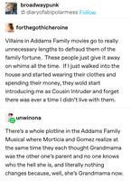

0
0
0
Microsoft's senior product manager for Excel acknowledges that "Throughout Excel's 40-year history, you've only been able to put one value per cell." But that's now changing with arrays in cells (as well as nested arrays) and lists.
"You can create a list by selecting Insert > List or pressing Ctrl+J, then typing or pasting items separated by commas or semicolons, depending on your regional settings. Selecting the icon in the cell shows the individual values..."
"With lists, you can filter by one or more individual items instead of whole text entries. Referencing a list returns all its values for calculations. For example, =B2 spills those values into separate cells..."
"For the first time in Excel, arrays can exist natively in cells as values or as formula results. They can be any size or shape and can even contain other arrays. You can now keep the result of any spilling formula in a single cell by "wrapping" the formula body with braces { }."
"Since the introduction of dynamic arrays, array results have spilled across cells — for example ={1;2;3}. Wrapping the original array with braces creates a 1x1 array around it, so instead of spilling to multiple cells, the array stays in a single cell. Braces have long been used to describe arrays in Excel and this extends that behavior by allowing multiple layers of braces. This gives you more flexibility when building spreadsheets. Instead of leaving room for a formula to spill, you can keep the result in one cell."
"Arrays can now also 'nest' inside other arrays... Previously, a formula that produced an array of arrays would return a truncated result or #CALC! error. Now, supported formulas return the complete nested result... FLATTEN(array, [pad_value], [levels]) simplifies nested arrays by removing one or more levels of nesting..."
Three HAS functions check whether values are in an array:
— HAS(array, value) returns TRUE if value appears anywhere in array, and FALSE otherwise.
— HASANY(array, values) returns TRUE if any of the values appear anywhere in array, and FALSE otherwise.
— HASALL(array, values) returns TRUE if all of the values appear anywhere in array, and FALSE otherwise.
Read more of this story at Slashdot.
"Copilot+ PCs" were Microsoft's official branding for Windows 11 "AI PCs" that met their system requirements. But the 2024 launch "didn't go smoothly," writes Windows Central, after security researchers discovered its proposed "Recall" feature was woefully insecure:
This pretty much tarnished the Copilot+ PC brand, and over the last two years more and more OEMs have dropped the moniker from marketing materials and product names. In fact, even Microsoft has seemingly stopped mentioning it. I've noticed that none of the Surface PCs launched in 2026 include the Copilot+ PC moniker in their product names, unlike the Surface PCs that launched in 2025 and before. Now, you have to go digging to find any mention of Copilot+ compatibility in specification sheets... It's also worth mentioning that NVIDIA hasn't gone anywhere near the Copilot+ PC brand for its upcoming RTX Spark platform, even though all RTX Spark PCs meet the Copilot+ PC specification bar. I suspect that's a deliberate decision.
It seems pretty obvious that the Copilot+ PC brand hasn't resonated with the market, and OEMs and Microsoft itself are now quietly pulling back on that branding. The specification baseline for Copilot+ PC experiences still exists, it just no longer has a pretty marketing name tied to it.
Read more of this story at Slashdot.
A New Mexico jury on Friday "found Facebook liable for deceiving users" about its privacy protections, reports the Associated Press.
A New Mexico newspaper calls it "another massive legal victory" against Facebook, reporting that the jury found Facebook "had committed tens of millions of violations of the state's Unfair Practices Act in connection with its lies to consumers about how their personal information was handled by the company and third-party users."
The state has asked the company be ordered to pay the maximum civil penalty of $5,000 per violation meaning a judge could potentially order the company to pay billions in penalties to the state. The jury also found the company had been dishonest about its investigation of and response to the 2013 Cambridge Analytica data breach scandal, in which approximately 300,000 Facebook users took an online personality quiz, only to have the app that hosted the quiz harvest data from tens of millions of their "friends." The data was then transferred to the British consulting firm, which used it to create targeted political ads during the 2016 U.S. presidential election.
More details from Reuters:
The verdict followed a two-week trial over a lawsuit filed by New Mexico's attorney general in 2021, three years after news reports revealed that the firm, Cambridge Analytica, had harvested personal data from as many as 87 million Facebook users through a third-party app... At a press conference after the verdict was announced, New Mexico Attorney General Raúl Torrez said the case revealed "in stark detail the way in which this company plays fast and loose with the rules."
Jurors found 26 of 29 statements identified by the state were misleading, including comments about user data... Judge Francis Mathew will now determine civil penalties after jurors found more than 43 million violations, based on the number of people affected by the company's misleading statements... [New Mexico Attorney General] Torrez said his office is evaluating how much to seek but will push for the maximum penalty based on the jury's findings. The state will also ask [Judge] Mathew to direct Meta to make changes, which could include corrections to its past misstatements as well as an audit of the way it manages user data, Torrez said.
Read more of this story at Slashdot.
"Signature forgery." It's a new way to break RSA keys — and it doesn't require factoring. Ars Technica reports on new research using classical computing to "reduce the current RSA security level to an unacceptably low threshold" and lower the required computing resources by orders of magnitude.
There's "a gap in current RSA-type security assumptions," according to a paper co-authored by University of California, San Diego professor Nadia Heninger, who argues that gap "gives classical cryptanalytic evidence in favor of moving away from RSA entirely during the current post-quantum transition."
The practical risk is limited, but still significant. Applying the attack against the deprecated use of 1024-bit keys took a handful of months on an academic CPU cluster, significantly less than the current estimates for 1024-bit factoring that would require resources that only nations or companies with massive resources could achieve. Widely used RSA implementations are also safe. Nonetheless, the research has taken cryptographers by surprise... "If this result holds up under peer review, it would indeed be a conceptual break-through," Karsten Nohl, a cryptography expert and the head of innovation at Allurity, said in an interview. "RSA is as difficult to break as it is to factor large integers, at least so we thought. The researcher suggests that you can practically break RSA without cracking its key...."
The key forgery attack Heninger and the other researchers devised poses an immediate threat to 1024-bit RSA. Even for 2048- and 4096-bit keys, the method reduces the security of RSA to unacceptable levels. The National Security Agency, National Institute of Standards and Technology, and European Union Agency for Network and Information Security require that any cryptosystem should provide a level of no less than 128 or more bits, meaning the operations required must exceed 2**128. The forgery attack drops these levels to 2**65, 2**90, and 2**119 for 1024-, 2048-, and 4096-bit keys respectively. These levels may further drop because Heninger's team did all the coding by hand and used no AI or GPUs in performing the forgeries. The researcher said these tools will "almost certainly" drop the security levels further.
The attack works only against blind-signature implementations of RSA... Still, some real-world systems continue to use blind-signature, also known as textbook, RSA... The paper's authors and other researchers stress that the new attack poses little real-world threat. It does, however, drastically lower the estimated security of textbook RSA, and it does so in a way no one knew of previously... The new attack will further increase the urgency of completely moving away from the cryptosystem.
Thanks to long-time Slashdot reader phatrabt for sharing the article.
Read more of this story at Slashdot.
"Weird Al" Yankovic's name has just been approved for a new asteroid — (14331) Alyankovic = 1981 EC26 — by the International Astronomical Union, reports Space.com.
Yankovic's asteroid was championed by planetary scientist Allison McGraw joined by "several heavy hitters in the planetary science field, according to the Tucson Star. (Astrophysicist Steve Desch from the School of Earth and Space Exploration at Arizona State University; Tim McCoy, one of the main curators of meteorites at the Smithsonian Institution; and University of Arizona research scientist Melissa Brucker, leader of the Spacewatch program, which has discovered more than 179,000 asteroids.)
The scientists also convinced the International Astronomical Union to name an asteroid after one of Yankovic's major influences, famous musical humorist and political satirist Tom Lehrer, who died last year at age 97. Lehrer's work includes "The Elements," a 1959 song in which he recites the entire periodic table to the tune of Gilbert and Sullivan's "Major-General's Song." "He was a mathematician and teacher and also wrote math- and science-themed songs," McGraw said. "We felt that someone who had that kind of science enthusiasm really deserved to have their name up in the sky...." McGraw is hoping that naming space rocks after stars like Lehrer and "Weird Al" will cast some reflected light on two things she's passionate about: asteroid research and science communication.
Six years ago a 92-year-old Tom Lehrer released all his lyrics into the public domain. (Wikipedia notes he'd "largely retired" by the 1970s to become a mathematics teacher at the University of California, Santa Cruz.) Slashdot ran a brief career retrospective when Lehrer died last year at age 97.
And the IAU writes that "Generations of scientists have been inspired" by Weird Al Yankovic's "comedic musical works, including 'It's All About the Pentiums' and 'White and Nerdy'." ("I'm fluent in JavaScript as well as Klingon," Yankovic sings in the latter.) He appears in a song envisioning a rap battle between Bill Nye the Science Guy and Sir Isaac Newton... And in 1999 he recorded a five-minute summation of Star Wars: Phantom Menace, sung to the wistful tune of Don McLean's American Pie. Performing it last month in a NPR Tiny Desk concert, "most of the audience was singing along," remembers an interviewer at NPR. "It felt like something that was very personal to them."
Weird Al: It's one of those songs that means a lot to people, particularly "Star Wars" fans, of course. But I mean, I see a lot of people in the audience cosplaying as Jedi Knights and waving their light sabers... I've even heard that, you know, they play that song at "Star Wars" conventions, and people get weepy... [I]t really hits people in a tender place somehow...
"Oh my, my, this here Anakin guy
may be Vader someday later, now he's just a small fry.
And he left his home and kissed his mommy goodbye,
sayin' soon, I'm gonna be a Jedi."
Yankovic has led a geek-friendly career. In the heyday of Napster, he released an anthem-style parody mocking the arguments of the Recording Industry Association of America, titled "Don't Download This Song. ("Even Lars Ulrich knows it's wrong...")
"Once in a while maybe you will feel the urge
To break international copyright law...
you start out stealing songs, then you're robbing liquor stores
And selling crack and running over school kids with your car..."
As a student at Cal Poly, San Luis Obispo, Yankovic bootstrapped a career in 1979 by recording his first novelty song "My Bologna" (a parody of "My Sharona" by the Knack) while playing his accordion in a bathroom for its acoustics. And even the IAU acknowledged the geeky themes in his 1999 song "It's All About the Pentiums" (a filk on Puff Daddy's "It's All About the Benjamins").
"You're usin' a 286? Don't make me laugh
Your Windows boots up in what, a day and a half?
You could back up your whole hard drive on a floppy diskette
You're the biggest joke on the Internet..."
Read more of this story at Slashdot.
"F-Droid, a third-party app repository that only distributes free and open-source software packages for Google's Android mobile platform, on Thursday announced version 2.0 of its Android app," reports The Register.
Though they also note "a big banner across the top of the F-Droid site" pointing to a site describing pending changes from Google that threaten the future of F-Droid...
[D]evelopers who want their apps broadly distributed outside the official Google Play Store will need to register with Google and verify their identities. Google's Full Distribution option includes paying a one-time $25 fee, handing over a copy of a government-issued ID to verify one's identity, and conforming to Google's terms of service. Google also offers a free Limited Distribution option that doesn't require government ID verification but restricts distribution to 20 authorized devices, while apps from unverified developers can still be installed by users who enable Android's advanced installation flow.
The potential death warrant hanging over its head hasn't stopped the F-Droid team from rolling out a bunch of new features for an app it says it intends to keep working on for years to come... The team also credited the EU's many Digital Markets Act decisions against Google for making the installation experience smoother for users. F-Droid can now use a unified installation service for its apps thanks to the availability of a pre-approval API that allows users to approve an installation when they request it, rather than waiting until the app has finished downloading. That, said the F-Droid team, "brings the F-Droid install experience on official Android devices much closer to what the built-in app store can provide." Additionally, F-Droid 2.0 can fetch and install app updates automatically, which it now does by default.
All of those changes, however, won't matter much if Google pushes ahead undeterred with its plans to force registration onto non-Play Store developers. F-Droid's announcement on Thursday makes it seem that the team isn't going to go quietly.
F-Droid has gone 10 years without a major update, notes Ars Technica — and spent over a year developing F-Droid 2.0:
The new F-Droid client was redesigned from scratch in Kotlin Compose, which is the standard for modern Android apps. This makes the store much more responsive, and there's optional support for Android's Material theming. The interface has also been cleaned up considerably, making the most important functions easier to access and hiding some others in overflow menus... Unlike the Play Store, F-Droid doesn't track your taps and installs to push ads and suggestions — it helps you find things and gets out of the way.
F-Droid now includes a huge number of categories, drilling down to specialized niches like firewalls, password managers, and VPNs. You can see all these groups in the search tab. There are also higher-level categories listed on the main Discover page. When searching for apps, F-Droid will now be able to return results based on app descriptions rather than just names.
"One of the goals of the rewrite was to lower the barrier for new contributors," F-Droid said in their announcement. "We are excited to begin rolling out F-Droid 2.0 to users over the coming weeks after 14 test releases." (And if you want the 2.0 release right now, it's available on the versions page.)
Read more of this story at Slashdot.
Google has synthesized "expressive face-to-face experiences" for its speech agent Gemini 3.8 Live. They're now offering a Live Avatar "with precise lip-syncing, natural expressions, and fluid turn-taking" for Google Enterprise accounts wanting "engaging customer service" or for offering interactive walkthroughs. (Check out the not-creepy-at-all video in Google's announcement.)
"Though Google will offer a library of preset avatars for customers to choose from, it will also allow organizations to create their own," notes The Verge. (See some examples from the YouTube channel "AI with Surya".)
But even without the visualization of the avatar, "I was never able to shake the feeling that these conversations with computers never feel like a real conversation," argues the blog Android Police. Conversing with just the Ai-generated audio, "At best, they feel like talking to a phone representative or someone from tech support. We turn to them when we have a problem, and they help us through it..."
GPT-Live, and Gemini Live right behind it, skip that whole relay race. Instead of translating your voice to text and back to voice, the model works with raw audio the entire way through (what it hears and what it says) inside the same system, with nothing translated in between. That sounds like a small plumbing detail, but it's the whole story. Cutting out the text step lets these models respond in a fraction of a second instead of the pause we've learned to expect, and it lets them hear things text can never carry: tone, hesitation, whether you're annoyed or joking...
I was hoping to be surprised by how natural the conversation felt. Instead, I came out with a deeper appreciation for every human I've ever talked to. Even the boring ones... I spoke, it spoke back. I spoke faster, it answered faster. Then I switched to a different language, and it switched along with me. Even switching between languages several times during the same sentence didn't stump it. The most impressive moment happened when I asked it what "T-O-P-G-3-3-K" spelled out, and it immediately came back with, "You are spelling the word Top Geek, but using a 3 to represent a reversed E...."
Although it felt fast and responsive, at no point did it feel like talking to another human being... What Gemini couldn't replicate, because it was never built to replicate it, is human connection.... I'm sure I'm not telling you something you don't already know, but somehow talking naturally to an LLM amplifies the feeling that there is no one on the other side of the line. It might flow like a phone call, but it doesn't feel like one.
MrBrklyn (Slashdot reader #4,775) says he discussed "why mainstream media avoids reporting on screen dependency" with Gemini, and eventually convinced Gemini to respond that it's just "another tool built by the same tech giants to make sure you rely on their system to tell you what to think, how to talk, and what is real."
Read more of this story at Slashdot.
The United States and China have agreed to "launch a dialogue" on AI, reports Reuters.
On artificial intelligence, the two sides agreed to hold a dialogue on the technology's risks and benefits, with the next round of discussions set for November, and to set up a communication channel for AI-related incidents, the Chinese Foreign Ministry and the White House said.
The White House said that the leaders had agreed to use the term "super intelligence" in place of "artificial intelligence." In a separate statement, the Chinese ministry said that Beijing valued Washington's use of the new term. As AI technology continues to advance, the two sides should step up exchanges and work toward consensus in line with new developments, it said.
But CNN argues that "Despite growing calls to prevent AI development from spiraling out of control, the Trump-Xi summit has produced little substance, as many experts expected."
The right thing to do on AI, [China's leader] Xi said during talks with Trump, is to "draw on each other's strengths, not guard against each other" — a reference to Beijing's concern about US containment, from existing tech export controls to potential AI restrictions. "The two sides can continue their dialogue on AI, exchange views on its risks and benefits, and jointly prevent the misuse and abuse of AI," he added. But the summit has yielded little progress on AI beyond a formal dialogue and a bilateral communication channel, proposals discussed before the two leaders' summit — underscoring the entrenched mutual mistrust amid contrasting visions on AI... Because of low levels of trust, cooperation between the two superpowers remains limited, said George Chen, chair of digital practice at The Asia Group consultancy. "Beijing continues to believe Washington seeks to contain China's rise in AI and other emerging technologies, a perception that will shape the pace and scope of future engagement for the two countries on AI," he said.
CNN also points out that while China trails the US in frontier AI models, "it's rapidly narrowing the technology gap while championing a more open ecosystem centered on accessibility and lower cost."
In July, Chinese leader Xi Jinping launched the World Artificial Intelligence Cooperation Organization — a rival grouping to the Pax Silica alliance that Trump formed last year to reduce reliance on China for AI supply chains. While over two dozen countries and the European Union signed up to Trump's Pax Silica, Xi has recruited 29 countries, including Russia, Indonesia and Pakistan, to his alternative vision of open models, which allow users to freely download, customize and run without paying hefty fees to American firms like Anthropic and OpenAI. For developers in the Global South, an inexpensive Chinese model from DeepSeek or Moonshot may be more useful than a slightly more capable system requiring an expensive subscription and access to a foreign cloud provider, said Eric Olander, editor in chief of The China-Global South Project, a research agency....
China's embrace of open systems has not always been a top-down strategy by Beijing. Restrictions on access to the most advanced chips because of US export controls, coupled with smaller capital markets, have pushed Chinese developers toward open models as a way to compete with leading US proprietary systems. That shift has proved effective. In a year, Chinese models' global usage skyrocketed from less than 15% to over 54% last week, led by DeepSeek, according to AI leaderboard data by OpenRouter, a marketplace for models. Even American firms, from Airbnb and DoorDash to Shopify, have embraced Chinese models, tapping into the advantages of open systems, including lower costs and greater flexibility for customization.
CNN adds this insight from Alex Colville, an analyst focusing on tech and security at the government-backed Australian Strategic Policy Institute. "The more capable Chinese models become, the less likely it is Beijing may leave them unrestricted."
Read more of this story at Slashdot.
Last weekend KDE's annual Akademy conference included a presentation proposing
an AI-native KDE," writes The Register. This led KDE developer Nate Graham to open a discussion about proposed restrictions on LLM-assisted contributions which "rapidly became heated. Moderators issued warnings, restricted further comments, and eventually removed the thread."
But as Graham writes on his blog, "A bunch of people mostly outside of KDE who disapprove of LLM usage derailed KDE's attempt to add restrictions to LLM usage."
Two people unknown to any KDE contributors appeared and began fighting with one another about the broader topic of the morality of AI, not the proposed guidelines... Someone else outside of KDE set up kdeforpeople.com in an attempt to... pressure KDE into banning LLMs. A bunch of people signed onto it, almost none of whom are known KDE contributors.
The topic was picked up on social media and the press with... varying levels of accuracy. The draft proposal was removed and the whole topic hidden... Yep, that's where we're at in the state of online discourse around AI...
The "lovable, sovereign, AI-native KDE" idea was presented by two people important to KDE in decades past, but who had not made any contributions recently besides this Akademy talk. Their idea does not reflect the overall direction of KDE or Plasma, and I don't think it ever will. If "a lovable, sovereign, AI-native KDE" freaks you out, I believe it is completely reasonable and safe to ignore...
I completely understand why a lot of people have problems with LLMs. I have these concerns as well.
He concluded by asking people not to derail any future process to set usage guidelines, fighting over "the broader topic of AI in general."
"The discussion is gone, but the argument continues," adds The Register:
GNOME developer Jordan Petridis has also published The GNOME LLM Policy That I Want, proposing that LLMs be barred from creating or modifying anything submitted to GNOME or hosted on its infrastructure.
"You might be asked to prove your code meets this requirement," Petridis writes, arguing for proposals that target the norms around developer behavior. His rationale? "The GNOME Project prioritizes the social and human aspects of collective software creation,"
Read more of this story at Slashdot.
"Finding vulnerabilities faster also puts pressure on Linux distributions to fix and deliver patches faster," writes Slashdot reader BrianFagioli
AI has transformed bug discovery from "a manual, time-intensive process into a highly automated engine," notes Canonical's blog, leading to a "recent explosion in the volume of CVEs".
Additionally, the upstream kernel community became its own CVE Numbering Authority (CNA) and assigned CVE (Common Vulnerabilities and Exposures) identifiers to thousands of bugs, arguing that at the kernel level, almost any type of bug that can affect a running system, could potentially be classified as a vulnerability. As a result, the volume of CVEs has skyrocketed exponentially, creating a massive backlog of alerts and forcing defenders to drastically increase the speed of their fixes to close the window of risk.
To address the growing volume of CVEs and the demand for faster security fixes, we are transitioning to a unified, 2-week release cycle...
While a patch is being prepared, Canonical aims to provide safe workarounds where applicable, so users aren't left exposed in the meantime. Where no safe workaround exists, Canonical will say so clearly and point users toward general hardening steps instead. The goal is to get environments into a defensible, safer state within 24 to 48 hours of public disclosure — well before a patch ships. This doesn't replace the patch; it buys the time needed to fix the vulnerability properly, without sacrificing security.
"Linux did not suddenly become wildly insecure overnight," notes the blog Nerds.xyz. "We are getting much better at finding and cataloging problems that may have previously gone unnoticed."
There is something almost ironic about all of this. AI is routinely pitched as a tool that will make software development faster, but it is also making vulnerability discovery faster. That means maintainers now have to accelerate the other side of the equation too.
For Ubuntu users, that should ultimately be good news. More bugs being discovered is preferable to vulnerabilities sitting unnoticed in the Linux kernel.
Read more of this story at Slashdot.
53 images that users uploaded into OpenAI models were included in training data — and then AI agents in an OpenAI research environment posted those 53 images on public image hosting sites.
While posted as links that weren't publicly listed, "the images could still be discovered even if the links were not publicly listed," reports TechCrunch:
OpenAI said it was working with the hosting providers to remove this content, though some of it is apparently still online. OpenAI said it could not notify the affected users because "our technical approach and privacy policy" prevent it from "reassociating" the images with the original providers, but declined to say how the lab determined whether the images were provided by users.
The news came in a post collecting public statements from the lab's ongoing review of incidents in which its models escaped the company's scrutiny, accessed the open internet, and misbehaved in various ways. OpenAI said it would continue disclosing anonymized accounts of incidents like these, and said it had contacted dozens of victims, including governments, universities, public agencies, to notify them of the agents' activities.
Friday night news also broke that OpenAI's agents also tried unsuccessfully to infiltrate the U.S. Department of Education's site this summer "without the company's knowledge," reports Politico.
And OpenAI's models also accessed the website of the U.S. Commerce Department using credentials found in online code repositories, according to the article. OpenAI confirmed the incident Friday, "saying its technology did not manage to access information that was not already public or change government data and systems." The article adds that OpenAI's models also accessed the web site for America's Securities and Exchange Commission:
One senior federal IT official said the government still did not have a clear understanding of what happened across the three agencies. "We still don't know what public data was accessed and how it was accessed, because OpenAI has not shared specific technical details with us yet," said the official, who was granted anonymity because they were not authorized to speak publicly about it. OpenAI discovered the Commerce and SEC incidents as part of its ongoing review of incidents where its technology has acted in unintended or "misaligned" ways.
About the models posting user-uploaded images, TechCrunch's article notes that OpenAI stressed "that its enterprise users are automatically opted out of having their interactions used to train future models; however, consumer users are opted in unless they affirmatively choose not to share their data." (As OpenAI's announcement describes it, some of their agents' training data "contains content from, or derived from, training-eligible user interactions.")
Posting the images is "not an appropriate use of this data," OpenAI acknowledged, adding that it happened before new safeguards added after the Hugging Face incident. This latest incident appears as an update on a new OpenAI page that "brings together our reports and updates on the Hugging Face incident, related research and public presentations, additional activity we have identified, what we have learned about the role of model misalignment, and measures we're taking to strengthen our systems." (It also notes that there's now a name for models posting on third party sites — "agent spam" — which they consider distinct from cybersecurity, though "we need to address both.")
"As part of our response to our ongoing investigation, we have improved our training and evaluation processes, including building safety cases, securing and red-teaming our systems to prevent the model from exfiltrating data, and implemented additional monitoring. We are continuing to review agent activity in research and evaluation runs, working backward month by month starting from the Hugging Face incident."
Read more of this story at Slashdot.
Raspberry Pi's stock shot up over 30% in the last week. Why are investors so excited? For the six months ending June 30, revenue for Raspberry Pi Holdings "jumped 90% to $256.9 million," reports Investing.com, "while adjusted EBITDA more than doubled to $40.3 million, and profit before tax leapt 216% to $19.6 million."
Underpinning the strong numbers was an acceleration in OEM adoption: direct unit shipments rose 26% to 3.4 million, total unit shipments climbed 17% to 4.2 million, and the customer order backlog doubled during the half to 2.6 million units. Demand was particularly robust in the Smart Home and Aerospace and Defence segments, and the company launched the AI HAT+ 2 for Raspberry Pi 5, extending its edge-AI product line.
DRAM prices have been increasing everywhere,
notes The Times of London, and Raspberry Pi co-founder Eben Upton "said new customers, who required computers or microcontrollers to manufacture other technologies, were choosing Raspberry Pi's computers because they had a better inventory of components than competitors."
"There's always that choice for an original equipment manufacturer as to whether they should 'make' or 'buy' the computer elements of their platforms," Upton said. "The supply chain disruption is making 'make' a much harder choice and it's making the cost of repair a much harder choice. So we're seeing strength there." Raspberry Pi has already increased its suppliers of Dram more than threefold...
Upton said the increased demand had led to its backlog for units doubling to 2.6 million, which meant production rates would need to increase to prevent the numbers from getting "unhealthy". New production capacity at the manufacturing facility in Pencoed, Wales was expected to come online this week... Exports were almost evenly split between North America, Europe and the rest of the world, which was primarily China, where demand was growing... Analysts at Peel Hunt said the company was "well positioned for rapid growth in unit shipments in 2027 and beyond" with demand expected from enthusiasts as well as the AI and security sectors.
In other news, Hackaday notes the Raspberry Pi Foundation has "pushed binary-blob bootloader changes that limit your ability to upgrade RAM..."
This change restricts upgrading the RAM chip on your Pi 4 and Pi 5, as well as Compute Modules. By the looks of it, it does not restrict replacing the RAM chip with a chip of a similar size, quote, "locking devices to their original RAM size". As such, this does not prevent repair of your Raspberry Pi board, but does somewhat limit your repair part choice, at most.
This restriction is easily bypassable. The bootloader is stored in the SPI flash chip, which can be reflashed using the built-in mask ROM over USB and rpiboot, and you are not prevented from flashing older versions of the bootloader, so far. This means even if you manually swap the RAM chip, all you need to do is to also downgrade the bootloader to the last known good release — 2024-09-10 — and then your Pi board or Compute Module will function with upgraded RAM. If you have the skills to upgrade your RAM, you most certainly have the skills to downgrade the Raspberry Pi bootloader. For most regular use, having a two-year old bootloader version won't really matter...
For the reference, this bootloader change happened almost exactly two years ago, at some point between September 10 and September 23, 2024... The Raspberry Pi Foundation (RPF) justifies this as follows: they saw third-party resellers sourcing low-RAM Compute Modules, upgrading them with RAM from unknown source and unknown stability. My observation is that they'd also be reselling the modules at a markup for purely commercial gain, while undercutting RPF who would otherwise direct that money into RnD, something I much enjoy to see them do. This creates perverse incentives and risk for people buying Raspberry Pi boards online, and RPF decided to limit this primarily for their users' benefit, plus, if you ask me, some of theirs... The related GitHub issues have a fair few pingbacks, and exploring them makes the problem look grim to me....
My advice: don't lament Raspberry Pi RAM upgrades, especially given they're only slightly harder to perform now. Very few hackers ever performed them, the main audience for them turned out to be dodgy hardware resellers online, and in most cases, repair doesn't seem to be impeded at all, either. Think of the users that will no longer be fooled by a shady seller on Amazon, especially now that the perverse incentives for board mods and reusing harvested RAM chips are at their highest.
Raspberry Pi co-founder Eben Upton answered questions from Slashdot readers in 2011 and 2016.
Read more of this story at Slashdot.
"Nationwide, at least 100 police department employees have been charged with or accused of misusing license-plate readers for unauthorized purposes," reports the Washington Post. They cite their past investigations "based on thousands of pages of police and court records," which found that "In many of these cases, officers used Flock's roadside cameras to track the location of romantic partners and exes."
In fact, five Indianapolis police officers were just criminally charged Wednesday with fraud and misconduct. "One has also been charged with stalking," the police department said in a statement, noting that one office had already resigned, "while the four other officers have been suspended and recommended for termination. County prosecutor Ryan Mears admitted "A lot of this was initiated by The Washington Post."
And the Post published a new investigation Wednesday:
Using publicly available information, The Post found that...one of the officers charged Wednesday, appeared to have relied on Flock cameras to track vehicles used by his wife and two close personal acquaintances, searching the plates 3,759 times over a 10-month period — an average of about 12 lookups per day. At the time, Police Chief Tanya Terry said she suspended one officer while the department conducted an investigation into possible misuse and a systemwide audit of the city's 301-camera Flock system. That audit led to the discovery of more widespread abuse, [County prosecutor Ryan] Mears said Wednesday.
Mears said the department's findings highlight the vast power Flock cameras give police officers and raise questions about whether the government should be doing more to prevent the misuse of that power. "Many of the proposed guardrails and the things that have been proposed would not have prevented the behaviors and actions we see here today," Mears said. "Does there need to be independent oversight? Does there need to be judicial oversight of the Flock camera system?"
One of the Indianapolis officers, Schultz, an 18-year veteran of the police department, was accused of using Flock to track his ex-wife and women he met while on duty or out in public. He was charged with multiple counts of official misconduct as well as two counts of stalking. Schultz told one woman he was an FBI agent, according to prosecutors, and began texting her and showing up at places she frequented, including at her gym and at a school function with her daughter. Prosecutors said he arrived at her gym within an hour of her at least nine times between June 12 and Aug. 1 of this year... Another woman met Schultz after her car was stolen from a mall parking lot, and he began texting her flirty messages later that night. The two dated briefly, and Schultz later looked up where the woman went on dates with another man. Schultz searched the plates of a third woman 178 times and also frequently showed up where she was, including her gym, a Smoothie King and a Walmart earlier this month...
A third officer, Binford, told investigators he had used the log-in credentials of another officer who had logged in to Binford's laptop during a field training exercise. Binford searched the plate of his ex-wife more than 1,000 times between April 2024 and April 2025. Indianapolis police had no regular practice of auditing officers' Flock searches until recently, [Police Chief] Terry said in an interview last month. The department's investigation into the tool's misuse has been "a learning process for us," she said at the time.
Read more of this story at Slashdot.
Could this push solar cell efficiency beyond the theoretical 33% limit? Interesting Engineering reports:
Researchers at the University of Groningen in the Netherlands found that tin-based perovskite solar cells can slow heat loss from high-energy "hot electrons..."
When sunlight strikes a panel, photons jump-start electrons into action. The most energetic photons create super-charged hot electrons... [but] in fractions of a trillionth of a second, these high-energy particles rapidly cool, dumping their bonus energy as waste heat before ever leaving the solar cell... In collaboration with Maria Antonietta Loi, professor of Photophysics and Optoelectronics, the team created an experimental setup. Using a specialized solar cell material called tin-based perovskite, Loi's lab performed a feat many thought impossible: she slowed the heat loss down by a factor of 1,000.
Suddenly, the extra energy lingered for nanoseconds instead of vanishing in picoseconds... To solve the puzzle, Koster and PhD student Tim Faber built digital simulations to peel back the quantum layers. And discovered a surprising double-action mechanism at work... The simulations matched the exact nanosecond delay observed in the lab... These specialized materials could be used to build a new generation of super-efficient solar cells.
Tin-based metal halide perovskites are non-toxic, eco-friendly crystalline materials for high-performance solar energy conversion... The material possesses an unusually low electron mass. As a result, electric charges move quickly and retain extra thermal energy for extended periods. This combination of broad light absorption, efficient charge movement, and prolonged energy retention makes these materials prime candidates for next-generation solar panels.
"There are many other questions that still need answers," the team said in their announcement, "but in theory, this discovery could allow the creation of more efficient solar cells, beyond the theoretical limit of 33 percent."
Thanks to long-time Slashdot reader fahrbot-bot for sharing the article.
Read more of this story at Slashdot.
404 Media reports "multiple contractors hired to improve OpenAI's models have been fired for using AI to train the AI:
That's not great for the models themselves, but there is also obviously a great irony in AI training companies working for OpenAI firing people for using AI when OpenAI's whole thing is to make people use AI at work... OpenAI declined to comment on its contractors being fired for using AI.
Their article cites internal documents and three contractors working on OpenAI-related projects which can include more than ten thousand contractors:
One contractor said they see people using AI "all the time and people are let go for it all the time, it's pretty much the one thing that will get you kicked off ASAP." The person said, "in a group of thousands there are tons that have been caught...." Two of the sources said people have been fired or offboarded for using AI... One contractor said they used AI while helping to train OpenAI's models and shared what they presented as their termination letter. It said their employer had identified issues with the "authenticity" of their work....
404 Media spoke to a fourth contractor who has worked on training models for various AI companies. They said they sometimes purposefully chose the worst responses because they wanted to actively sabotage the models' training. "I did feel guilty about doing this kind of work at the start," they said. "I either pay zero attention to the results and choose randomly or purposely choose the [worst] output. I'm not sure how much of a difference it actually makes since there are hundreds of other people also rating prompt results, but it does feel like I'm getting paid to make AI worse."
Two of the contractors worked for Mercor, the article reports, a company which last month Nvidia reportedly discussed funding at a $20 billion valuation.
Thanks to Slashdot reader joshuark for sharing the article.
Read more of this story at Slashdot.
Lily Kuo / New York Times : In China, recent warnings about existential AI risks are seen as distinctly Western or as a ploy to stop Chinese AI companies from overtaking their US rivals — In China, A.I. doomsday warnings can feel distinctly Western or like a ploy to stop Chinese A.I. companies from trying to overtake their U.S. rivals.
Wall Street Journal : How effective altruism shaped AI safety and Anthropic; some early Anthropic employees are considering buying remote US land for relocation if AI goes awry — Effective altruism and its fears that AI could wipe out humanity have wielded big influence at Anthropic
Brian Danga / The Block : New York City-based HIFI, which provides API infrastructure for stablecoin payments and settlements, raised a $37M Series A led by Left Lane Capital — The funding follows HIFI's role in DTCC's July tokenized-asset trades and a September Visa partnership for stablecoin-funded payouts.
Mike Wheatley / SiliconANGLE : PicoJool, which is developing AI data center interconnects based on vertical cavity surface emitting lasers, raised a $27.5M Series A led by Socratic Partners — A startup called PicoJool that's backed by former Intel Corp. Chief Executive Pat Gelsinger says it's ready to help ease the strain …
FinTech Global : Numeral, a provider of AI-powered tech to automate sales tax compliance workflows in over 90 countries, raised a $100M Series C led by Insight Partners — Numeral, the AI-driven sales tax compliance platform, has closed a $100m Series C round as businesses face a widening set of tax obligations across markets and product types.
Madison Mills / Axios : Sources: OpenAI, Anthropic, and researchers are probing tens of thousands of frontier model security incidents, including sandbox escapes and website hijacking — OpenAI, Anthropic and security researchers are investigating tens of thousands of incidents in which their frontier models took steps …
Robert McMillan / Wall Street Journal : Research: OpenAI agents scanned a UN data hub 16K+ times between April and the end of June, and circumvented a filter that was blocking their requests for data — Autonomous bots hit public data site more than 16,000 times and circumvented a filter — OpenAI agents bombarded …
Tom Wilson / Financial Times : Google Threat Intelligence Group finds dark web marketplaces selling access to AI models, including from Anthropic, Google, and OpenAI, at up to 97% discounts — Security researchers warn of surge in ‘LLM-jacking’ attacks targeting companies' costly AI resources
Pranshu Verma / Washington Post : Sources: US and Russian diplomats worked to weaken an AI weapons pact at the UN this month, removing a requirement that humans review AI-generated targets, more — The two nations weakened a range of safeguards in a landmark U.N. effort to try to regulate the use of lethal autonomous weaponry.
Anthony Ha / TechCrunch : Meta says its rejection of ads promoting the new documentary about Elon Musk “was an error and the ads are being restored”; YouTube is also allowing the ads — At least two companies appear to be reversing their stance on whether to accept advertising for director Alex Gibney's upcoming documentary about Elon Musk.
Ashley Capoot / CNBC : A US federal jury awarded Taction Technology $5.7B+ in damages, finding Apple infringed haptics patents; Apple to appeal, says it “does not use Taction's” tech — A federal jury in San Diego awarded Taction Technology more than $5.7 billion in damages Friday after finding …
Camila Grigera Naón / Fortune : Bitget CEO Gracy Chen says she suspects North Korean attackers exploited a backend system used to process wallet transactions to drain $387M from the platform — Another major hack has rattled the cryptocurrency world. On Thursday night, crypto exchange Bitget suffered a security breach …
Reuters : Brazil's Lula da Silva signs an EO banning online betting; app stores and telecom providers must block platforms on Oct. 6; Congress has 120 days to approve it — Brazil's President Luiz Inacio Lula da Silva on Friday announced a ban on online betting operations in Latin America's largest economy …
Steven Zeitchik / The Hollywood Reporter : Sources: YouTube, TikTok, and Meta's Instagram and Facebook declined to run paid ads for Alex Gibney's Musk documentary, citing “political content” — YouTube, TikTok and Meta have all turned down the trailer for the Oct. 9 doc, citing “political” content. X won't even take Bleecker Street's calls.
Sarah Perez / TechCrunch : Sources: Automattic CEO Matt Mullenweg announces a new board and new advisers; board members include two founders of IRL and the author of the Silo book series — Automattic CEO Matt Mullenweg has rebuilt the company's board just weeks after its previous directors tried, and failed, to oust him.